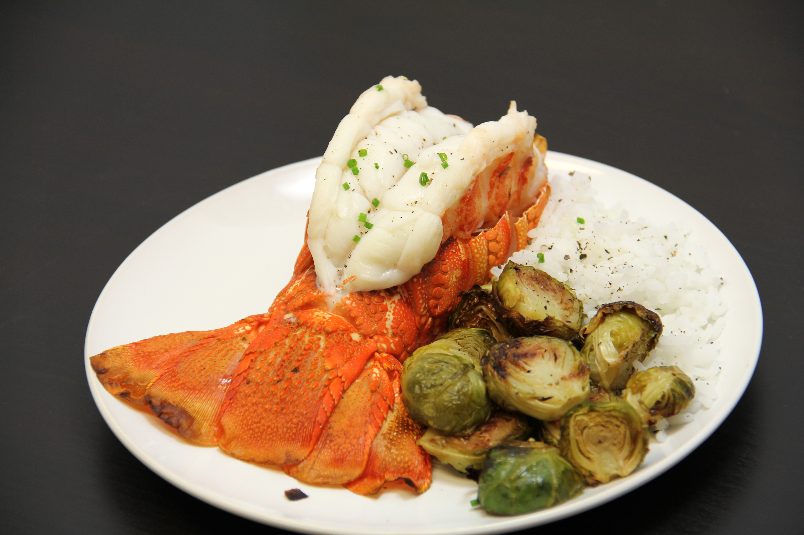
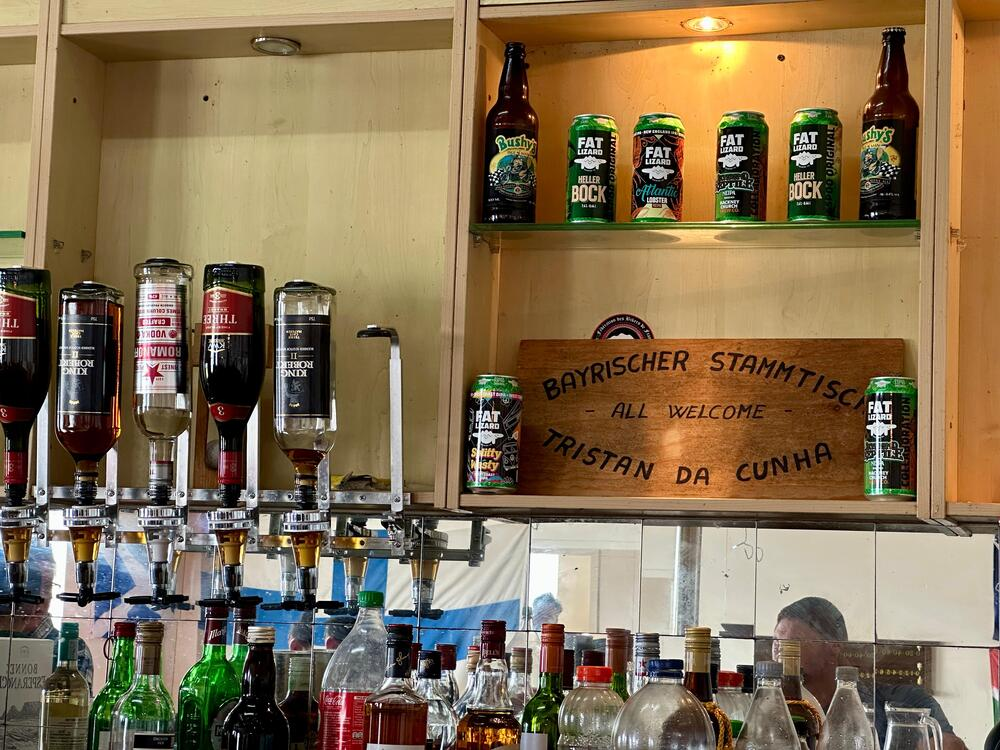
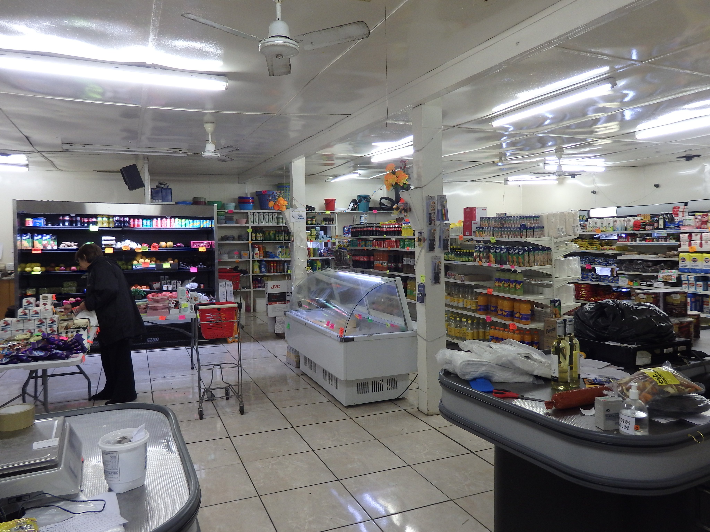
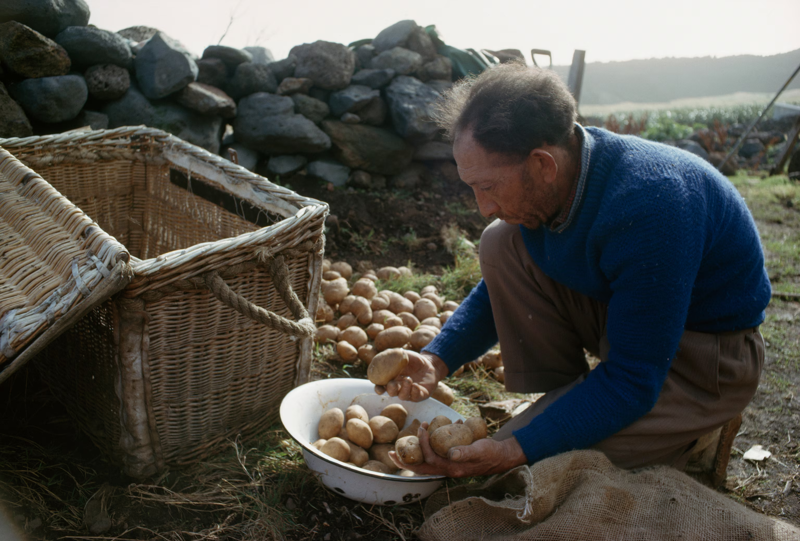

From Our Table to Yours

A Taste of Island Life
Dining on Tristan da Cunha is an authentic experience shaped by the sea, tradition, and the strong community that surrounds it.
Meals are simple yet full of flavor, often prepared with fresh, local ingredients and shared generously among visitors and neighbors alike.
Whether you are enjoying a hearty home-cooked stew or freshly baked bread from the local café, every bite tells a comforting story of care and self-sufficiency.
The Albatross Bar & Café
The Albatross Bar & Café is truly the social heart of the island - a cozy gathering place where residents meet to relax after work and visitors come to feel part of the community.
The café serves light meals, cakes, coffee, and tea during the day, while evenings bring friendly conversation over a glass of island-made spirits or a pint.
With its warm atmosphere and excellent view of the harbor, it's a perfect spot to conclude a long day of island exploration.
Opening Hours: Monday-Saturday: 10:00-14:00 & 18:00-22:00 | Sunday: Closed


The Island Store & Snack Counter
The Island Store creatively doubles as a small shop and a snack counter, offering convenient options like soft drinks, pies, and sandwiches for those on the go.
It is the best place to grab a quick bite before setting out on a hike or to chat with locals over a morning coffee.
Stock is limited but ever-changing, depending entirely on local produce and the contents of the latest supply ship to arrive.
Opening Hours: Monday-Friday: 08:30-16:30 | Saturday: 09:00-13:00 | Sunday: Closed
Community Kitchen & Events Hall
For visitors lucky enough to attend an island celebration or a community dinner, the Community Kitchen is where the unique Tristan spirit truly comes alive.
Residents gather here to share traditional dishes passed down through generations, along with homegrown vegetables and freshly caught fish.
hese events are shared experiences, not commercial restaurants, and powerfully reflect the island's generosity and deep sense of unity.
Event Schedule: dates vary - check local notice boards.
